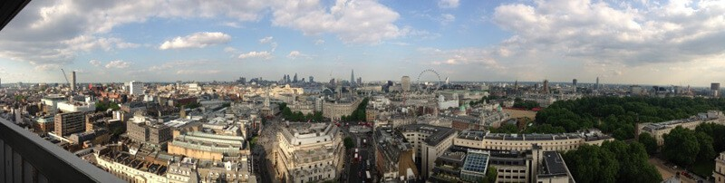

TIMA hosts the launch of AIB 2014 Awards in style with penthouse views of London's landmarks
On Thursday 15 May the UK and international news industry gathered to celebrate the 10th anniversary of the annual AIB Awards at the launch of the 2014 awards. The event was hosted by AIB member and tpr client TIMA – The International Media Associates – in the penthouse of New Zealand House, TIMA’s London HQ, with panoramic views of the London skyline.
Over 120 guests attended from both in front and behind the camera. Among them were AIB Personality of the Year John Suchet, BBC presenter Nelufar Hedayat, BBC World Service producer Owain Rich, Wilfred Frost from Paradine Productions, Antena 3 CEO Mihai Gadea, and Nobel Prize nominated filmmaker Callum Macrae. Representatives from Bloomberg, VOA, Channel 4 and Al Jazeera also enjoyed the opportunity to find out about this year's AIB Award categories, to meet past winners and toast fellow producers, editors, journalists and executives from the media industry worldwide.
Over the past ten years the AIB Awards have celebrated the best of factual programming, together with the technology and personalities that bring them to life. Each year they highlight the most inspiring story-telling across TV, online and radio, drawing on a shortlist from 25 countries. This year the awards will launch a new category dedicated to content specifically created for online audiences.
The launch was introduced by AIB CEO Simon Spanswick and Radio New Zealand CEO Paul Thompson. Simon Spanswick said of the event: "This year’s launch demonstrates the importance of the AIBs at the end of their 10th year celebrating factual programme-making globally across TV, radio and online. We are proud to represent and showcase the best and most engaging content. We also were delighted to have the opportunity to introduce new AIB member TIMA to our members from around the world and to host the event at New Zealand House, home to TIMA’s impressive studios overlooking London’s landmarks."
Event host TIMA provides a range of cutting-edge services for the international news broadcast industry, including production facilities, content production and events’ coverage. TIMA is set up to cover world events as well as feature packages. They have bureaux in London, Paris and Washington DC and a growing network of operations worldwide, including Tehran and Damascus. TIMA gave tours of their studios and facilities at New Zealand House, offering the opportunity for guests to find out more about their global news gathering operations.
TIMA CEO Alla Salehian praised the AIB Awards and highlighted the importance of celebrating the best of international news coverage: "At a time when the abduction of school children in Nigeria is hitting headlines around the world, it's becoming increasing obvious that international news stories have a global impact. With unfolding events in the Ukraine, Syria and Africa, there has never been a more important time to increase understanding of these stories. But it’s not just breaking news that matters, it's also important to understand international developments through the context of people's everyday lives. On the 10th anniversary of the AIB Awards there is real urgency to create, circulate and celebrate this content and we're proud to be a part of this."
For more information, visit www.tima.com.